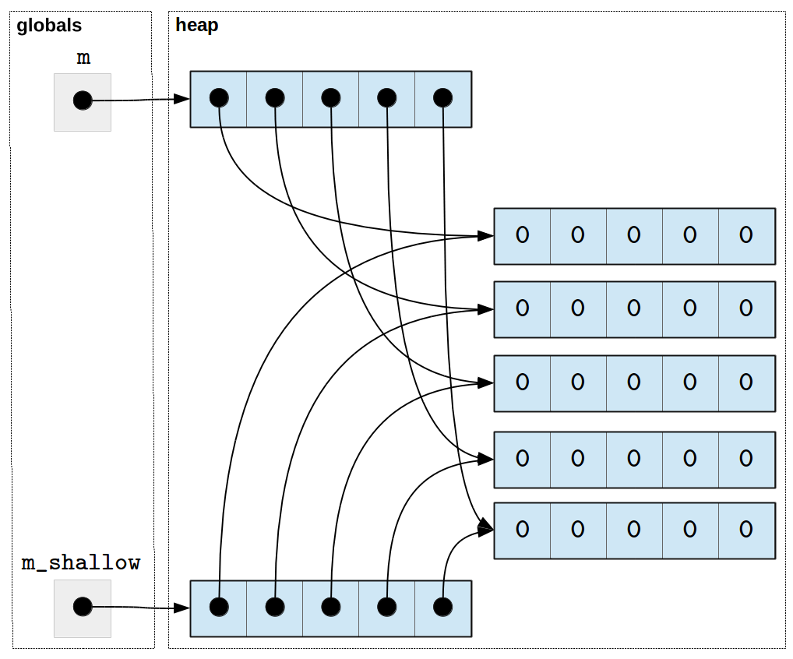

2.1. Lists, Tuples, and Strings
Up to this point, we have worked with simple data types:
integers, floats, strings, and booleans. Whenever we used these data types,
a variable contained a single value. For example, the variable
price contains a single integer:
>>> price = 10
>>> price
10
Most programming languages allow us to construct a more complex data structure out of these basic data types. In fact, we caught a glimpse of this in Control Flow Statements, where we wanted to compute the total price (with tax) of a collection of prices:
prices = [10, 25, 5, 70, 10]
for p in prices:
tax = 0.10 * p
total = p + tax
print(f"The price (with tax) is {total}")
The price (with tax) is 11.0
The price (with tax) is 27.5
The price (with tax) is 5.5
The price (with tax) is 77.0
The price (with tax) is 11.0
The prices variable contains a list of integers, as opposed to a
single integer. In Python, a list allows us to store and manipulate an
ordered sequence of values. In this chapter, we will dig deeper into
lists and learn how to create and manipulate them. Towards the end of
the chapter, we will introduce a related data type, tuples. We will
also discuss a number of features of strings that are easier to
understand once we know how lists work.
In general, most programming languages provide some way of working with collections of values. Python’s lists are a very versatile and powerful data type, arguably more so than similar data types provided in other languages. They are not, however, the be-all and end-all of working with multiple values: later in the book we will see other types, such as dictionaries and classes, that allow us to work with collections of values in other ways.
2.1.1. Creating lists
To create a list, we type the values in the list separated by commas
and delimit the beginning and end of the list with square
brackets. For example, here we assign a list of strings to a variable
named lang:
>>> lang = ["C", "C++", "Python", "Java"]
>>> lang
['C', 'C++', 'Python', 'Java']
And here is a list of integers:
>>> nums = [3, 187, 1232, 53, 21398]
>>> nums
[3, 187, 1232, 53, 21398]
Since Python is a dynamically-typed language, a list can have values of different types. So, for example, this is a valid list:
>>> lst = ["string", 4, 5.0, True]
>>> lst
['string', 4, 5.0, True]
For the most part, we will avoid mixed-type lists because we typically want to operate on lists of values of the same type. In fact, statically-typed languages usually require all the values in a list to have the same type.
To create an empty list, we use square brackets with no values between them:
>>> lst = []
>>> lst
[]
Lists created by enclosing a sequence of values in square brackets,
such as [ 1, 2, 3], are known as list literals.
We can also create new
lists by concatenating existing lists using the + operator:
>>> lst0 = [1, 2, 3]
>>> lst1 = [4, 5, 6]
>>> lst2 = lst0 + lst1
>>> lst2
[1, 2, 3, 4, 5, 6]
The new list (lst2) contains the values from the
first operand followed by the values from second operand.
Sometimes, we will want to create a list of a specific size with all the entries in the list set to the same initial value. For example, we may want to create a list with ten zeroes. We could do this task by explicitly writing out all the values:
>>> lst = [0, 0, 0, 0, 0, 0, 0, 0, 0, 0]
>>> lst
[0, 0, 0, 0, 0, 0, 0, 0, 0, 0]
Of course, this approach would be cumbersome for long lists.
So, we’ll use the multiplication operator (*) to do this task instead:
>>> lst = [0] * 10
>>> lst
[0, 0, 0, 0, 0, 0, 0, 0, 0, 0]
In general, given a list l and an integer value n, the expression l *
n concatenates n copies of the list l to create a new
list. The list l can even contain more than one value:
>>> lst = [0, 1] * 10
>>> lst
[0, 1, 0, 1, 0, 1, 0, 1, 0, 1, 0, 1, 0, 1, 0, 1, 0, 1, 0, 1]
If the idea of multiplying a list and an integer seems odd to you, recall that multiplication is repeated addition and that adding two lists simply concatenates their values in a new list.
Once we have created a list, we can obtain its length using the
built-in len function:
>>> lang
['C', 'C++', 'Python', 'Java']
>>> len(lang)
4
>>> nums
[3, 187, 1232, 53, 21398]
>>> len(nums)
5
>>> lst
[0, 1, 0, 1, 0, 1, 0, 1, 0, 1, 0, 1, 0, 1, 0, 1, 0, 1, 0, 1]
>>> len(lst)
20
2.1.1.1. Practice Problems
Problem 1
Construct a list literal with the string values "one", "two",
and "three" in that order.
Problem 2
Write an expression to construct a list that contains the values 1, 2, and 3 repeated 5 times.
2.1.2. Accessing elements in a list
Once we have a list, we can access and update individual values within that list.
To do so, we specify the variable containing the list followed
by the position, or index, of the element we want to access enclosed in square brackets.
Indexes are numbered from zero so if we wanted to access the third
element in the list, we would use index 2. For example:
>>> lang
['C', 'C++', 'Python', 'Java']
>>> lang[2]
'Python'
We can use individual elements from a list wherever a value of the element’s type is appropriate. For example:
>>> nums
[3, 187, 1232, 53, 21398]
>>> (nums[0] + nums[1]) * nums[2]
234080
Lists are mutable: we can change both the contents and the size of a list. To update the value at an index, we assign a value to the list element at that index using the same indexing notation as when we read a value from the list, but on the left side of an assignment statement:
>>> lang
['C', 'C++', 'Python', 'Java']
>>> lang[2] = "Python 3"
>>> lang
['C', 'C++', 'Python 3', 'Java']
Indexes are specified as integers, so the square brackets can contain any expression that evaluates to an integer. For example:
>>> i = 1
>>> lang[i]
'C++'
>>> lang[i + 1]
'Python 3'
Whether we are accessing or updating a value, we must always
use a valid index. If we do not, our code will fail.
For example, let’s try to access the fifth element of the lang list, which
only has four elements. Remember that, since lists are indexed from zero, we will use index 4 in our attempt to access the (non-existent) fifth element:
>>> lang[4]
Traceback (most recent call last):
File "<stdin>", line 1, in <module>
IndexError: list index out of range
IndexError is an exception, which, as we saw in
Understanding Errors and Catching Exceptions, is Python’s way of informing us that
something went wrong at runtime. In this case, the exception is
telling us that our code failed with a list index of out range
error. When you encounter an error of this variety, you will want to
print the actual index and then look at your code and the stack trace
provided in the error message to identify the origin of the bad index.
(Alternatively, you may need to determine why your list is shorter
than expected.)
Python also allows programmers to use negative indexes, counting from
the end of the list, to access the list. So, index -1 refers to the last
element in the list, index -2 is the next-to-last element of the
list, and so on.
>>> lang
['C', 'C++', 'Python 3', 'Java']
>>> lang[-1]
'Java'
>>> lang[-2]
'Python 3'
Note that lang[len(lang)-1] and lang[-1] are equivalent ways
to extract the last element in the list; the len(lang) part of the
index expression is implicit in the second version.
As with positive indexes, Python will generate an IndexError exception at runtime if we specify a negative index that is out of range:
>>> lang[-5]
Traceback (most recent call last):
File "<stdin>", line 1, in <module>
IndexError: list index out of range
2.1.2.1. List slicing
In addition to accessing a single value from a list, we can also access all of the elements between two specified indexes of a list. This operation is called slicing and requires specifying the two indexes separated by a colon:
>>> lang
['C', 'C++', 'Python 3', 'Java']
>>> lang[1:3]
['C++', 'Python 3']
In the above example, the slice contains the elements starting at
index 1 up to but not including index 3. The slice itself is
a new list: it contains a copy of the values in the original
list. So, we can modify the resulting slice without altering the
original list. For example:
>>> lang
['C', 'C++', 'Python 3', 'Java']
>>> lst = lang[1:3]
>>> lst
['C++', 'Python 3']
>>> lst[0] = "C++14"
>>> lst
['C++14', 'Python 3']
>>> lang
['C', 'C++', 'Python 3', 'Java']
Note that, as with accessing individual elements, an index in a slice can be any expression that evaluates to an integer.
At times using a negative index as part of a slice can yield code that
is easier to read. We can even mix and match negative and positive
indices when we slice a list. For example, here are at two ways to
extract a slice with all but the first and last elements of lang:
>>> lang[1:len(lang)-1]
['C++', 'Python 3']
>>> lang[1:-1]
['C++', 'Python 3']
Which version feels more natural to you? Here’s another example:
extract the last two elements of lang:
>>> lang[len(lang)-2:len(lang)]
['Python 3', 'Java']
>>> lang[-2:len(lang)]
['Python 3', 'Java']
When constructing a slice, one or both operands can be omitted. When first operand (that is, the value to the left of the colon) is omitted, its value defaults to 0:
>>> lang
['C', 'C++', 'Python 3', 'Java']
>>> lang[:2]
['C', 'C++']
When second operand (that is, the value to the right of the colon) is omitted, its value defaults to the length of the list:
>>> lang
['C', 'C++', 'Python 3', 'Java']
>>> lang[1:]
['C++', 'Python 3', 'Java']
>>> lang[-2:]
['Python 3', 'Java']
If both are omitted, the slice contains the entire list:
>>> lang
['C', 'C++', 'Python 3', 'Java']
>>> lang[:]
['C', 'C++', 'Python 3', 'Java']
Remember that evaluating a slice yields a new list, so the default slice
notation ([:]) is commonly used as an idiom for creating a copy of
a list.
>>> lang
['C', 'C++', 'Python 3', 'Java']
>>> lang2 = lang[:]
>>> lang2[0] = "Scheme"
>>> lang2[-1] = "Haskell"
>>> lang2
['Scheme', 'C++', 'Python 3', 'Haskell']
>>> lang
['C', 'C++', 'Python 3', 'Java']
Finally, we can specify an arbitrary step through the values in the slice by adding a second colon followed by the step size. For example, if we have a slice from index 1 up to but not including index 7 with a step of 2, we get the values at indexes 1, 3, and 5 (but not 7). For example:
>>> tens = [0, 10, 20, 30, 40, 50, 60, 70, 80, 90, 100]
>>> tens[1:7:2]
[10, 30, 50]
When the step is not specified, it defaults to one (i.e., we step through the elements of the list one by one).
The step can be negative:
>>> tens[7:1:-1]
[70, 60, 50, 40, 30, 20]
The bounds work as before: Python starts at the first bound (7) and goes up
to but does not include the second bound (1) using the specified step
size (-1).
Negative steps are most often used to yield a new list that contains the values of an existing list in reverse order:
>>> tens[::-1]
[100, 90, 80, 70, 60, 50, 40, 30, 20, 10, 0]
Omitted indices work differently when the step is negative.
If we omit the first bound, the missing value defaults to the index of the
last element in the list. A missing second
bound defaults to a value immediately
to the left of the first element in the list (thereby including the
index of the first element in the range of legal values). We
can use None as the bound and get the same behavior:
>>> tens[len(tens)-1:None:-1]
[100, 90, 80, 70, 60, 50, 40, 30, 20, 10, 0]
Unfortunately, there is no numeric value that we can specify that behaves in exactly the same way.
Degenerate slices
Perhaps surprisingly, degenerate slices, or slices with
out-of-bounds indexes, do not fail at runtime; Python handles them
gracefully instead. If you specify a bound that is too small, then
Python uses the smallest legal value in its place (e.g.,
-len(lang) for the list lang). If you specify a bound that is too
large, Python uses the length of the list as the bound instead.
Notice, for example, that evaluating lang[-10:10] and
lst[-len(lang):len(lang)] yield the same four element list:
>>> lang[-10:10]
['C', 'C++', 'Python 3', 'Java']
>>> lang[-len(lang):len(lang)]
['C', 'C++', 'Python 3', 'Java']
One consequence of this design is that slicing an empty list is legal and simply yields a (new) empty list:
>>> [][0:2]
[]
It is also possible to generate an empty list when slicing a non-empty list. Here are two examples of this phenomenon, one that uses legal indexes and another that uses out-of-bounds indexes:
>>> lst[1:1]
[]
>>> lst[5:10]
[]
While this language design choice may seem at odds with your expectations, not having to worry about out-of-bounds indexes when constructing a slice is quite convenient.
Updating lists using slicing
Slices are typically used to extract a copy of part of a list, but
they can be used on the left side of an assignment statement to
specify a range of elements to be updated in an existing list as well.
For example, the following code replaces the first two elements of
lang:
>>> lang[0:2] = ["Ruby", "Scala"]
>>> lang
['Ruby', 'Scala', 'Python 3', 'Java']
This usage is much less common and should be used sparingly.
2.1.2.2. Practice Problems
Problem 3
Part 1 Given the following list:
lst = ["one", "two", "three", "four", "five", "six"]
what is the result evaluating the following expressions:
lst[3]lst[-4]lst[2:5]lst[:10]lst[1::3]
Part 2
For each of the following, write an expression to extract the specified value(s):
"five"fromlst;"five"fromlstusing negative indexing;the last four values in
lst;the last three values in
lstin reverse order.
2.1.3. Iterating over a list
Often, you will need to perform some action for each element
of a list. Processing a list element by element is usually
called iterating over the list, and as we saw in Control Flow Statements,
we can use a for loop to do this work:
prices = [10, 25, 5, 70, 10]
for p in prices:
tax = 0.10 * p
total = p + tax
print(f"The price (with tax) is {total}")
The price (with tax) is 11.0
The price (with tax) is 27.5
The price (with tax) is 5.5
The price (with tax) is 77.0
The price (with tax) is 11.0
Notice that the loop starts at the beginning of the list and proceeds
through the list elements in order. In each iteration of the loop, the
loop variable p contains the value of the list element that is
being processed. The loop ends once it has iterated over all of the
values in the list. If the list is empty, there are no values to
process and so the body of the loop is never executed.
Alternatively, we could also use the range function, which we also discussed in
Control Flow Statements, to iterate over the indexes of the list, and then use those
to access the list:
prices = [10, 25, 5, 70, 10]
for i in range(len(prices)):
tax = 0.10 * prices[i]
total = prices[i] + tax
print(f"The price (with tax) is {total}")
The price (with tax) is 11.0
The price (with tax) is 27.5
The price (with tax) is 5.5
The price (with tax) is 77.0
The price (with tax) is 11.0
The above code produces the exact same result as the previous version,
but it is considered poor style (you
will often see this style referred to as “not Pythonic”). First
of all, it is harder to read: instead of “iterating over a list of
prices” we are “iterating over all valid indexes of a list of prices”.
It is also more error-prone: in the first version, p contains the
price we are processing in the current iteration; in the second
version, i contains an index that we could easily use by mistake as the
price in place of prices[i], the appropriate expression
for accessing the i-th price in the list.
In other programming languages, iterating over the indexes is often the only way of iterating over a list. So, if you are already familiar with a language that uses this approach, remember that in Python, iterating over a range of indexes is typically considered poor style.
Occassionally, a task requires iterating over both the values in a
list and their indices. Python provides a built-in function, named
enumerate, that allows us to iterate over both the current value
being processed in a loop and its index. Instead of specifying one
name for the loop variable, we supply two–one for the index and one
for the value–separated by a comma.
Here’s a variant of the task above that uses both the index (named
i) and the value (named price):
prices = [10, 25, 5, 70, 10]
for i, price in enumerate(prices):
tax = 0.10 * price
total = price + tax
print(f"The price (with tax) of element {i} is {total}")
The price (with tax) of element 0 is 11.0
The price (with tax) of element 1 is 27.5
The price (with tax) of element 2 is 5.5
The price (with tax) of element 3 is 77.0
The price (with tax) of element 4 is 11.0
Tip
Keep in mind that cases where you need to know the index of each
value as you iterate through a list are typically few and far
between. So, when you are writing a loop to process a list, your
first instinct should be to iterate over the values of the list.
Only if you find that you need both the value and its index, should
you use enumerate.
If you find yourself using range with the length of a list, you
may want to rethink your implementation choices.
The line between values and indices can be a bit blurry. For example,
it can be convenient to use the values in one list as indices into
another list. Let’s say we want to print the values in lang in an
order that reflects one person’s language preferences. We could
represent those preferences as a list of integers between zero and
three inclusive. The list [2, 0, 3], for example, would represent
the preferences of a person who prefers Python to C and C to Java and
declined to rank C++. To print the languages in the preferred order
we could write:
>>> preferences = [2, 0, 3]
>>> for p in preferences:
... print(lang[p])
...
Python 3
Ruby
Java
Notice that p, which iterates over the preferences, is used as an
index into the list lang.
2.1.3.1. Practice Problems
Problem 4
Write a function, print_matching_indexes, that takes a list of
integers and a value and prints the index of every occurrence of the
value in the list. For example, given the list [1, 3, 4, 1, 5, 7]
and 1 as the value, the function should print 0 and 3.
Given the same list and 9 as the value, your function should not
print anything, because 9 does not occur in the list.
What might make good test cases (in addition to the the sample inputs listed above) for this function?
Problem 5
Write a function, find_idx_first_match, that takes two lists of
the same length and finds the first index where the two lists have the
same value. If no match is found, the function should return -1.
For example, the call find_idx_first_match([1, 2, 3, 7], [2, 5, 3,
7]) would return 2, since both lists contain the value 3 at
index 2 and do not match at any of the indexes less than 2. The
call find_idx_first_match([1, 2, 3], [2, 3, 1]) the function would
return -1, since there is no index at which the lists match.
What might make good test cases (in addition to the the sample inputs listed above) for this function?
How would your implementation change if the lists were not guaranteed to be the same length?
2.1.4. Modifying a list
So far, we have seen how to create a list with a number of elements, and then access or modify those elements. We are not limited to working with just the elements specified when a list is created: lists can grow and shrink dynamically.
For example, lists have an append method that we can use to add a
new element to the end of an existing list. A method is a special
type of function that operates on the variable on which it is
called. We call the append method like this:
lang.append("Scheme")
This code should be understood as follows: the append method will
perform an operation on lang, and will do so with a parameter
("Scheme"), the value we want to add to the end of the
list. For example:
>>> lang
['Ruby', 'Scala', 'Python 3', 'Java']
>>> len(lang)
4
>>> lang.append("Scheme")
>>> lang
['Ruby', 'Scala', 'Python 3', 'Java', 'Scheme']
>>> len(lang)
5
This operation modifies the
list in-place. In other words, the lang list itself is
modified, as opposed to having append return a new list
with the appended value. We will see that many functions
and methods modify lists in-place.
A Common Pitfall
A common mistake is to treat the append method as if it returns
the updated list. It does not: it updates its list operand and
returns None. As a result, a statement like this:
>>> lang = lang.append("Go")
Sets the value of lang to None, which is likely not what
the programmer has in mind.
To avoid this mistake, never use the append method in an
assignment statement or as part of a more complex expression.
Functions and methods
In Introduction to Functions, we introduced functions as an
abstraction mechanism. Defining a function allows us to
parameterize a task, assign it a name, and then use it by name in
multiple places in our code. Methods also allow us to parameterize
a task, assign it a name, and use it in multiple places. The
difference between the two mechanisms, as you will see in more
detail in Classes and Objects, is that methods are defined as
part of a class and operate on (or are applied to) a specific
value of that class (known as an instance of the class). The
value is placed to the left of the . and the method name and
parameters appear on the right of the .
In this code, for example,,
lang is a list (an instance of the list class) and
append is the name of a list method that takes a single
argument ("Scheme").
We will discuss how to define your own classes and methods in
detail in a few chapters. For now, just keep in mind that
operations on values, such as lists, are often defined as methods
and are used with the . syntax.
Similar to append, we can use the extend method to
extend an existing list with the contents of another list:
>>> lang = ["C", "C++", "Python", "Java"]
>>> lang2 = ["Pascal", "FORTRAN"]
>>> lang.extend(lang2)
>>> lang
['C', 'C++', 'Python', 'Java', 'Pascal', 'FORTRAN']
Like append, extend modifies the list in-place.
The insert method inserts new elements in a specific position and
takes two parameters: the position
where the new element will be inserted and the value to be inserted:
>>> lang
['C', 'C++', 'Python', 'Java', 'Pascal', 'FORTRAN']
>>> lang.insert(2, "Haskell")
>>> lang
['C', 'C++', 'Haskell', 'Python', 'Java', 'Pascal', 'FORTRAN']
Notice that insert doesn’t replace the existing value in position
2. Instead, it inserts the new value at position 2 and shifts
all the original values starting at index 2 to the right by one.
Finally, the pop method removes a value in a
specific position. The pop method takes one parameter: the
position of the item we want to remove.
>>> lang
['C', 'C++', 'Haskell', 'Python', 'Java', 'Pascal', 'FORTRAN']
>>> lang.pop(2)
'Haskell'
>>> lang
['C', 'C++', 'Python', 'Java', 'Pascal', 'FORTRAN']
The pop method also returns the value that was removed from
the list.
If we omit the parameter to pop, it will remove
and return the last element in the list by default:
>>> lang
['C', 'C++', 'Python', 'Java', 'Pascal', 'FORTRAN']
>>> lang.pop()
'FORTRAN'
>>> lang
['C', 'C++', 'Python', 'Java', 'Pascal']
We can also remove elements using the del operator, which
uses a different syntax. It is not a function or method, but
a built-in operator, and it must be followed by the item we
want to remove written using the list indexing syntax:
>>> lang
['C', 'C++', 'Python', 'Java', 'Pascal']
>>> del lang[3]
>>> lang
['C', 'C++', 'Python', 'Pascal']
Notice that, unlike pop, del doesn’t return the value that is
removed.
Tip
Do not modify lists as you iterate over them. Doing so may yield unexpected or surprising result. This loop, for example, may never terminate:
lst = [1, 2, 3, 4]
for val in lst:
if val % 2 == 0:
# val is even
lst.append(val)
The next example terminates, but the desired result is not at all clear:
>>> l = [1, 2, 4, 5]
>>> for i, val in enumerate(l):
... if i < len(l) - 1 and val % 2 == 0:
... # remove the value that follows an
... # even number.
... del l[i+1]
...
Are we expecting to get [1] or [1, 2, 5]?
2.1.4.1. Practice Problems
Problem 6
Given the following list:
lst = ["one", "two", "three", "four", "five", "six"]
For each of the following operations, determine the result of
evaluating the operation and the value of lst afterwards. Assume
the operations are done in order, so changes made by one operation are
visible to the next operation:
lst.append("seven")lst.pop()lst.pop(2)del lst[2]lst.extend(["eight", "nine", "ten"])lst.append(["eleven", "twelve"])lst.insert(2, "thirteen")
2.1.5. Creating a list based on another list
Now that we’ve seen how to iterate over a list as well
as how to use the append method, we can discuss another common way
of creating a list: by taking the values from an existing list,
transforming them in some way, and creating a new list with the
transformed values. For example, let’s say we have a list of prices:
prices = [100.0, 59.99, 7.00, 15.00]
We may be interested in producing a new list that contains the same prices after a 10% discount is applied. We start by creating an empty list:
discounted_prices = []
Then, we use a for loop to iterate over the values in the original
list. For each element, we transform the value by multiplying it by
0.9 and use the append method to add the transformed value to
the new list:
for price in prices:
new_price = price * 0.9
discounted_prices.append(new_price)
The discounted_prices list now contains the discounted prices:
>>> discounted_prices
[90.0, 53.991, 6.3, 13.5]
This example shows the four key components used in this common computational pattern:
a list to iterate over (
prices, in the example above),a variable that holds the individual values over the course of the computation (
price),an expression that computes a new value from the old one (
price * 0.9), anda name for the resulting list (
discounted_prices).
We can use the angle bracket notation that we introduced in Control Flow Statements to describe this pattern more formally as follows:
<list name> = []
for <variable name> in <list expression>:
new_val = <transformation expression>
<list name>.append(new_val)
Recall that words in bold represent keywords that are part of the
language itself, whereas anything delimited with angle brackets means
“substitute this for …” (i.e., you do not write the < and >
characters themselves).
Python includes a special syntax, called a list comprehension for expressing these frequently-performed types of computations:
<list name> = [ <transformation expression> for <variable name>
in <list expression> ]
Here’s the example shown above rewritten using this compact syntax:
>>> discounted_prices = [price * 0.9 for price in prices]
We are not required to assign the list comprehension to a variable. We can use it in any place where a list would be valid. For example:
>>> for n in [x**2 for x in range(1,11)]:
... print(n)
...
1
4
9
16
25
36
49
64
81
100
The transformation expression can be any legal Python expression and is not required to use the values in the original list. For example, the list comprehension:
>>> [0 for i in range(10)]
[0, 0, 0, 0, 0, 0, 0, 0, 0, 0]
yields a list of ten zeros.
List comprehensions also allow us to filter the values from the
original list that will be included in the computation of the new list. For
example, suppose we wanted to create a discounted_prices list, but
only wanted to include prices (before the discount) that are greater
than 10. If we were using a for loop, we might write something like
this:
discounted_prices = []
for price in prices:
if price > 10:
new_price = price * 0.9
discounted_prices.append(new_price)
print(discounted_prices)
[90.0, 53.991, 13.5]
With list comprehensions, we can just write this code instead:
>>> discounted_prices = [price * 0.9 for price in prices if price > 10]
>>> discounted_prices
[90.0, 53.991, 13.5]
So, the general syntax for list comprehensions becomes:
[ <transformation expression> for <variable name> in <list expression> if <boolean expression> ]
where the boolean expression is evaluated for each value in the original list. If the boolean expression is true, the transformation expression is evaluated and the result is added to the new list.
In other words, this more general list comprehension expands into this code:
<list name> = []
for <variable name> in <list expression>:
if <boolean expression>:
new_val = <transformational expression >
<list name>.append(new_val)
We will return to this topic again in List comprehensions revisited to discuss an alternate way to think about the computation captured by the list comprehension shorthand.
2.1.5.1. Practice Problems
Problem 7
Write a function compute_str_lengths that takes a list of strings
and constructs a new list where the ith entry in the result is the
length of the ith string in the input list. For example, given ["abc",
"d", "efgh", ""], the result would be [3, 1, 4, 0]. (You can find the
length of a string using the built-in len function. For example, len(“abc”) yields
3.)
What would make good test cases in addition to the the sample input listed above?
Problem 8
Write a function find_long_strs that takes a list of strings and a
threshold length and returns a new list that contains all the strings
in the input list that are least the specified threshold in length.
For example, find_long_strs(["abc", "d", "efgh", ""], 3) would
yield ["abc", "efgh"], while find_long_strs(["abc", "d", "efgh",""], 10) would yield [], because none of the strings have at
least ten characters.
What would make good test cases in addition to the the sample input listed above?
2.1.6. Other operations on lists
Lists are a very versatile data structure in Python and we have a
large number of operators, functions, and methods at our disposal to
operate on them. We will only mention some of the more useful ones
here; you can see the complete list in the official Python
documentation, or by writing help(list) in the Python interpreter.
Given a list of integers:
>>> lst = [17, 47, 23, 101, 107, 5, 23]
We can find the minimum and maximum value with the built-in
min and max functions:
>>> min(lst)
5
>>> max(lst)
107
>>> min([1, "abc", 3.14])
Traceback (most recent call last):
File "<stdin>", line 1, in <module>
TypeError: '<' not supported between instances of 'str' and 'int'
The third example illustrates an important aspect of these functions: they will succeed only if there is a natural ordering on the elements of the list.
For lists containing numbers (either integers or floats), we
can add up all the values in the list with the built-in sum
function:
>>> sum(lst)
323
We can use the count method to count the number of occurrences
of a given value:
>>> lst.count(47)
1
>>> lst.count(23)
2
>>> lst.count(29)
0
Note that while we could use this method to determine whether a list contains a specific value:
>>> lst.count(47) > 0
True
>>> lst.count(25) > 0
False
Python provides a more direct way to do this test, namely, the in
operator:
>>> 47 in lst
True
>>> 25 in lst
False
We can reverse the list in-place with the reverse method:
>>> lst
[17, 47, 23, 101, 107, 5, 23]
>>> lst.reverse()
>>> lst
[23, 5, 107, 101, 23, 47, 17]
As noted earlier, we can produce a new list that contains the values of an existing list in reverse order using slicing:
>>> lst_reversed = lst[::-1]
>>> lst_reversed
[17, 47, 23, 101, 107, 5, 23]
>>> lst
[23, 5, 107, 101, 23, 47, 17]
We can sort the values in the list in ascending order using the sort
method. Like reverse, this method will modify the list in-place:
>>> lst
[23, 5, 107, 101, 23, 47, 17]
>>> lst.sort()
>>> lst
[5, 17, 23, 23, 47, 101, 107]
If we want to create a sorted copy of the list without modifying
the original list, we can use the built-in sorted function:
>>> lst = [17, 47, 23, 101, 107, 5, 23]
>>> lst2 = sorted(lst)
>>> lst2
[5, 17, 23, 23, 47, 101, 107]
>>> lst
[17, 47, 23, 101, 107, 5, 23]
By default, both the list sort method and the sorted function
sort the values in a list in increasing order. Both have an optional
keyword parameter, reverse, that can be set to True to
indicate that the data should be sorted in decreasing order, instead.
Notice, for example, the order of the elements in the result from this
call to sorted:
>>> sorted(lst, reverse=True)
[107, 101, 47, 23, 23, 17, 5]
2.1.6.1. Practice Problems
Problem 9
Given the following list:
lst = [1.5, 1.2, 7.3, 4.4, 6.5, 0.3, 1.2, 1.2]
For each of the following pieces of code, determine the result of
evaluating the code and the value of lst afterwards. Assume the
operations are done in order, so changes made by one operation are
visible to the next operation:
min(lst)max(lst)sum(lst)lst.count(1.2)lst.count(4.4)lst.count(0.0)lst[::-1]lst.reverse()sorted(lst)lst.sort()
2.1.7. Variables revisited
In Programming Basics we described variables as symbolic names representing
locations in the computer’s memory. When we assign a value to a variable,
we are storing that value in the associated location in memory. So, say we have two
variables a and b:
If we assign a value to variable a:
>>> a = 42
Then the position in memory represented by variable a will now contain
the value 42:
If we now assign the value of variable a to b:
>>> b = a
Then b will contain the same value as a:
However, each variable will still represent distinct positions in memory, which
means that if we modify a:
>>> a = 37
The value of b is not affected:
>>> a
37
>>> b
42
To be more specific, Python copied the value of variable a and stored the
copy in b during the b = a assignment.
Lists, on the other hand, behave differently. Let’s say we have two variables
lst1 and lst2 and we assign a list to lst1:
>>> lst1 = [1, 2, 3, 4]
Unlike simple types like integers, the lst1 variable (or, more
specifically, the location in memory it represents) doesn’t contain the list
directly. Instead, it contains a reference to another location in memory
that contains the list. We represent this behavior pictorially with an arrow going from lst1
to the list:
If we now assign lst1 to lst2:
>>> lst2 = lst1
lst2 will point to the same list
as lst1. In other words, assigning one list to another does not
create a copy of the list; it creates a copy of the reference to
the list, so that both variables point to the same list in memory:
We refer to two (or more) variables that reference the same list as
aliases of each other. The above assignment, for example, makes
lst1 and lst2 aliases.
As a result of this sharing, changes made to a list through one
variable will affect the other variable. For example, if we modify
the first element of lst2:
>>> lst2[0] = 100
>>> lst2
[100, 2, 3, 4]
We are modifying both the list referenced by lst2 and the list
referenced by lst1, because lst1 and lst2 refer to the
same list.
We can see that the change to lst2 also changed lst1:
>>> lst1
[100, 2, 3, 4]
This design makes comparing lists a bit tricky. Let’s say we have the following statements:
>>> lst3 = [1, 2, 3, 4]
>>> lst4 = [1, 2, 3, 4]
After these assignments, lst3 and lst4 refer to separate
lists, which just happen to contain the same values:
The equality operator (==) compares the contents of the lists, not
whether the variables contain references to the same list in memory,
and so, lst3 and lst4 are considered equal:
>>> lst3 == lst4
True
The lst3 and lst4 variables themselves do contain different values
(since they point to different locations in memory, which just
happen to contain lists with the same values). We can actually see
these values (the location of the lists in memory) using the
built-in id function:
>>> id(lst3)
124750133459968
>>> id(lst4)
124750133918080
>>> id(lst3) == id(lst4)
False
Note: if you run this code yourself, you will very likely not see the
same id values as shown above. The id value for lst3,
however, should not be the same as the one for lst4.
In contrast, the lst1 and lst2 variables we created earlier do have the
same id value, since they both refer to the same list in memory:
>>> id(lst1)
124750134283648
>>> id(lst2)
124750134283648
>>> id(lst1) == id(lst2)
True
In some languages, such as C, the equality operator (==)
determines whether two variables refer to the same location in memory
and not whether the values of the two variables are the same. This
type of equality is known as reference equality. A test that
determines whether two variables have the same value is known as
value equality. Python provides both types of equality. The
standard equality operator (==) performs value equality, while the
is operator performs reference equality. Using the is
operator, we could rewrite the above id examples as:
>>> lst3 is lst4
False
>>> lst1 is lst2
True
Finally, in some cases, we may actually want to assign a copy of a
list to another variable. As noted earlier, we can just use
the slicing operator, since it will always return a new list. More
specifically, we specify the [:] slice (remember:
when we omit the starting and ending indexes, they default to zero and
the length of the list respectively). For example:
>>> lst5 = [1, 2, 3, 4]
>>> lst6 = lst5[:]
>>> lst5
[1, 2, 3, 4]
>>> lst6
[1, 2, 3, 4]
>>> lst5 == lst6
True
>>> id(lst5) == id(lst6)
False
>>> lst5 is lst6
False
Notice that lst5 and lst6 end up pointing to different locations in memory
(which happen to contain lists with the same values). So, unlike lst1 and lst2,
if we were to modify an element in lst6, lst5 would not be affected:
>>> lst5
[1, 2, 3, 4]
>>> lst6
[1, 2, 3, 4]
>>> lst6[0] = 100
>>> lst6
[100, 2, 3, 4]
>>> lst5
[1, 2, 3, 4]
2.1.8. The heap
In the previous section, we explained that variables refer to lists and that more than one variable can refer to the same list. Where do the lists actually reside in memory? The answer is that lists (and other compound data structures that we’ll discuss in subsequent chapters) reside in a part of memory known as the heap, which is managed behind the scenes for you by a part of the Python runtime system called the garbage collector.
The garbage collector allocates space in the heap when you create a new list or add values to an existing list and it is responsible for reclaiming space when it is no longer needed.
2.1.9. List parameters
In Introduction to Functions, we saw that Python functions use a type of parameter passing called call-by-value where the arguments to a function are evaluated before the function is called and the resulting values are used to initialize fresh copies of the formal parameters.
However, we just saw that, when it comes to lists, the value of a list variable is actually a reference to the list elsewhere in memory. This detail means that when we call a function with a list parameter, it is this reference (and not a copy of the list) that is used to initialize the formal parameters.
For example, suppose we want to write a function scale that takes a list lst and modifies
it in-place so that each value in the list is scaled by a given factor.
We could write the function like this:
def scale(lst, factor):
'''
Multiplies the values in a list in-place by a specified factor.
Args:
lst (List[number]): a list
factor (number): the factor to multiply by
Returns: None
'''
for i, val in enumerate(lst):
lst[i] = val * factor
Let’s try out this function:
>>> nums = [10, 20, 30, 40]
>>> scale(nums, 0.5)
>>> nums
[5.0, 10.0, 15.0, 20.0]
The nums list was modified by the function scale, which
seems to go against our previous warning that functions cannot modify
variables outside their scope. This seeming anomaly can best
understood by looking at what happens in memory.
Before the call to scale, memory looks like this:
The variable nums resides in the space set aside for globals and
the list resides in the heap.
Once the call to scale is made, memory will look like this:
Notice that the lst parameter in the stack frame for scale
refers to the same list (in the heap) as the global nums. (If you
skipped the The function call stack section of Introduction to Functions, you
may want to revisit it now.)
Once the computation is finished and scale returns, the stack
frame goes away and we are left with nums and the modified list.
As the client of a function, you need to be mindful that when you pass
a list as a parameter to a function any changes made inside the
function to the parameter will affect the original list. If you write a function that,
like scale, modifies a list in-place, make sure this behavior is
properly documented so that anyone using the function is aware that
the list that they are passing to the function will be modified. In
general, it is considered poor style to modify a data structure as a
side effect of a function unless that is the stated purpose of the
function.
Next, since scale modifies the list in-place, it doesn’t need to
return anything. However, we could write a similar version of
scale that, instead of modifying the list in place, creates and
returns a new list, leaving the original list intact:
def scale(lst, factor):
'''
Multiplies the values in a list by a specified factor.
Inputs:
lst (List[number]): a list
factor (number): the factor to multiply by
Returns (List[number): a list of the same type as factor
where the ith value is the ith value of the input list
multiplied by the factor.
'''
new_lst = []
for x in lst:
new_lst.append(x * factor)
return new_lst
>>> nums = [10, 20, 30, 40]
>>> scaled_nums = scale(nums, 0.5)
>>> nums
[10, 20, 30, 40]
>>> scaled_nums
[5.0, 10.0, 15.0, 20.0]
This version of scale uses a for-loop and append to
construct the new list. We can also write the function using list
comprehension:
def scale(lst, factor):
'''
Multiplies the values in a list by a specified factor.
Inputs:
lst (List[number]): a list
factor (number): the factor to multiply by
Returns (List[number): a list of the same type as the factor
where the ith value is the ith value of the input list
multiplied by the factor.
'''
return [x * factor for x in lst]
In both versions, a list is constructed in the heap and a reference to the newly constructed list is returned.
This approach to passing and returning lists is efficient because the value handed around is just a memory address. We do not need to make a full copy of the list every time it is passed as an argument or returned as a result. Of course, this efficiency comes at a cost: it is easy to introduce hard-to-find bugs by unexpectedly modifying a list passed as a parameter.
When taking lists as parameters to functions, you should:
Be mindful that any changes you make to the list will have an effect outside the function’s scope;
Think carefully about whether you want to modify the list in-place or return a new list with modified values; and finally,
Record your choice in your function’s docstring!
2.1.9.1. Practice Problems
Problem 10
Write a function, add_in_element_wise, that takes two lists of
equal length and updates the first list with the element-wise sum of
the two lists. That is, the i-th value of the first list should be
sum of the original i-th value of the first list and the i-th value of the
second list.
What would make good test cases in addition to the the sample input listed above?
2.1.10. Lists of lists
The lists we have seen so far contain simple values like integers or strings, but lists can, themselves, contain other lists. For example, the following list contains three elements, each of which is a four-integer list:
>>> m = [ [1,2,3,4], [5,6,7,8], [9,10,11,12] ]
Notice that, if we iterate over the list, we iterate over the three lists that constitute the elements of the outer list (not the twelve integers contained across the sublists).
>>> for row in m:
... print(row)
...
[1, 2, 3, 4]
[5, 6, 7, 8]
[9, 10, 11, 12]
Lists-of-lists are often used to represent matrices. For example,
list m could represent this matrix:
1 |
2 |
3 |
4 |
5 |
6 |
7 |
8 |
9 |
10 |
11 |
12 |
To access individual elements, we use the square brackets twice: once to specify the row, and again to specify the column:
>>> m[1][2]
7
>>> m[2][0]
9
Similarly, we can assign values to individual elements using the square bracket notation:
>>> m[1][1] = 0
>>> m
[[1, 2, 3, 4], [5, 0, 7, 8], [9, 10, 11, 12]]
>>> for row in m:
... print(row)
...
[1, 2, 3, 4]
[5, 0, 7, 8]
[9, 10, 11, 12]
We can also nest lists even further. For example, we could use a “list-of-lists-of-lists” to represent a three-dimensional matrix:
>>> m3d = [ [ [1,2], [3,4] ], [ [5,6], [7,8] ], [ [9,10], [11,12] ] ]
>>> for submatrix in m3d:
... for row in submatrix:
... print(row)
... print()
...
[1, 2]
[3, 4]
[5, 6]
[7, 8]
[9, 10]
[11, 12]
In the above example, m3d is a 3x2x2 matrix.
It is important, however, to understand that, even though we can use lists-of-lists to manipulate data in a matrix-like way, the data is not stored internally as a matrix: it is stored as a list with references to other lists, meaning that we can still access each individual list:
>>> m
[[1, 2, 3, 4], [5, 0, 7, 8], [9, 10, 11, 12]]
>>> m[2]
[9, 10, 11, 12]
Or modify these lists in a way that turns the data into something that is not a matrix:
>>> m[2] = "Foobar"
>>> m
[[1, 2, 3, 4], [5, 0, 7, 8], 'Foobar']
>>> for row in m:
... print(row)
...
[1, 2, 3, 4]
[5, 0, 7, 8]
Foobar
This representation can cause problems when we initialize a list
of lists. For example, we want to create a 5x5 matrix, with all elements
initialized to 0. For example, we might be tempted to use the *
operator to create a row of five zeroes with
[0]*5 and then repeat that five times, like this:
>>> m = [ [0]*5 ] * 5
At first, it may seem like this approach worked:
>>> m
[[0, 0, 0, 0, 0], [0, 0, 0, 0, 0], [0, 0, 0, 0, 0], [0, 0, 0, 0, 0], [0, 0, 0, 0, 0]]
>>> for row in m:
... print(row)
...
[0, 0, 0, 0, 0]
[0, 0, 0, 0, 0]
[0, 0, 0, 0, 0]
[0, 0, 0, 0, 0]
[0, 0, 0, 0, 0]
However, something odd will happen if we try to modify an element of the matrix:
>>> m[2][3] = 10
>>> m
[[0, 0, 0, 10, 0], [0, 0, 0, 10, 0], [0, 0, 0, 10, 0], [0, 0, 0, 10, 0], [0, 0, 0, 10, 0]]
>>> for row in m:
... print(row)
...
[0, 0, 0, 10, 0]
[0, 0, 0, 10, 0]
[0, 0, 0, 10, 0]
[0, 0, 0, 10, 0]
[0, 0, 0, 10, 0]
What happened here? When we created the list m, we actually initialized
all five positions of m to point to the same list ([0, 0, 0, 0,
0]). Basically, the expression [0]*5 produced one list,
but then using * again didn’t create five copies of this list: it
created five copies of the reference to the list, which we can
depict as follows:
As a result, updating one “row” of the matrix actually updates them
all! If this explanation of why the rows of M all refer to the
same list is confusing, please re-read the
Variables revisited section.
Instead of using multiplication on a nested list to initialize the matrix, we will use a pair of nested loops:
>>> m = []
>>> for i in range(5):
... # create a row for the matrix
... row = []
... for j in range(5):
... row.append(0)
... # add the row to the matrix.
... m.append(row)
...
The new version of m created using version can be depicted as
follows:
As we can see, modifying one row of m won’t affect any other
row now:
>>> m[2][3] = 10
>>> for row in m:
... print(row)
...
[0, 0, 0, 0, 0]
[0, 0, 0, 0, 0]
[0, 0, 0, 10, 0]
[0, 0, 0, 0, 0]
[0, 0, 0, 0, 0]
There are two other ways we could built m: one uses a loop combined
with list multiplication and the other uses a list comprehension:
Here is the loop plus list multiplication version:
>>> m = []
>>> for i in range(5):
... m.append([0]*5)
...
Why does this work? Because the expression [0]*5 is reevaluated in each iteration of
the loop, a new list of five zeros is constructed and then a reference to that new list is appended to
m on every iteration.
And here is the list comprehension version:
>>> m = [ [0] * 5 for _ in range(5) ]
As in the previous version, a new list of five zeros is constructed for each value in the range.
In sum, while lists-of-lists can be used to manipulate matrix-like data, they must constructed used with care. Also, the way Python stores the lists internally means that many matrix operations (like matrix multiplication) can be quite inefficient. If you find yourself needing to manipulate matrix-like data extensively in your code (specially if you have to use higher-dimensional matrices), you may want to consider using a library like NumPy, which is specifically optimized for manipulating matrices and vectors, and which we will cover later in the book.
2.1.10.1. Practice Problems
Problem 11
Write a function, add_constant_2D, that takes a matrix,
represented as a list of lists, and a constant c and adds c to
every element in the matrix in-place.
For example, given:
m1 = [[1, 2, 3],
[4, 5, 6]]
the value of m1 after a call to add_constant_2D(m1, 10) would be:
[[11, 12, 13],
[14, 15, 16]]
What would make good test cases in addition to the the sample input listed above?
Problem 12
Write a function, average_rows, that takes a matrix represented as
a list of list of floats and returns a list of floats where the i-th
float is the average of the values in the i-th row. For example given:
>>> matrix = [[1.0, 2.0, 3.1],
... [4.5, 5.0, 6.0],
... [7.0, 8.3, 9.0]]
the function would return [2.033333333333333, 5.166666666666667,
8.1].
Problem 13
Write a function, average_columns, that takes a matrix represented
as a list of list of floats and returns a list of floats where the
i-th float is the average of the values in the i-th column. Given the
matrix in Problem 12, the result would be [4.166666666666667,
5.1000000000000005, 6.033333333333334].
Problem 14
The shape of a matrix is the number of rows (that is, the length of the outer list) and columns (that is, the length of the inner list) in the matrix.
Write a function, add_2D that takes two matrices, represented as
list of lists, with the same shape and returns a new matrix (with the
same shape) with element-wise sum of the inputs.
For example, given:
m1 = [[1, 2, 3],
[4, 5, 6]]
m2 = [[10, 20, 30],
[40, 50, 60]]
the result of calling add_2D(m1, m2) would be:
[[11, 22, 33],
[44, 55, 66]]
What would make good test cases in addition to the the sample input listed above?
2.1.11. Shallow copy versus deep copy
Earlier in the section, we saw how to use slicing to make a copy of a list:
>>> lst = [1, 2, 3]
>>> lst_copy = lst[:]
>>> lst == lst_copy
True
>>> lst is lst_copy
False
This mechanism is very useful, but only does a shallow copy of the list. That is, it copies the values in the list. If the copied value is a reference to a list, the reference is copied, not the list itself.
This design is efficient, but can lead to unexpected sharing. For example, let’s recreate our matrix of zeros and then make a shallow copy:
>>> m = []
>>> for i in range(5):
... m.append([0]*5)
...
...
>>> m_shallow = m[:]
The result can be depicted as follows:
Notice that while the top-level level lists are different, they refer
to the same sub-lists. We can verify this behavior using the is
operator, which us whether two elements refer to the same location
in the heap.
>>> m is m_shallow
False
>>> for i in range(len(m)):
... print(i, m[i] is m_shallow[i])
...
0 True
1 True
2 True
3 True
4 True
The copy library provides a function called deepcopy that can
be used when your application needs to avoid sharing between the
original and the copy.
>>> import copy
>>> m_deep = copy.deepcopy(m)
>>> for row in m_deep:
... print(row)
...
...
[0, 0, 0, 0, 0]
[0, 0, 0, 0, 0]
[0, 0, 0, 0, 0]
[0, 0, 0, 0, 0]
[0, 0, 0, 0, 0]
>>> m is m_deep
False
>>> for i in range(len(m)):
... print(i, m[i] is m_deep[i])
...
0 False
1 False
2 False
3 False
4 False
2.1.12. Tuples
Tuples, another data structure available in Python, are very similar to lists. We can use them to store sequences of values and can create tuple literals in the same way we create list literals, except using parentheses instead of square brackets:
>>> t = (100, 200, 300)
>>> t
(100, 200, 300)
We include a trailing comma in tuples of length one to to distinguish
tuples from expressions that happen to be surrounded by
parenthesis. Note, for example, the difference in the type of t
versus the type of e in the following code:
>>> t = (1,)
>>> type(t)
<class 'tuple'>
>>> e = (1)
>>> type(e)
<class 'int'>
Many of the operations available on lists are also available on tuples:
>>> t = (100, 200, 300)
>>> len(t)
3
>>> t[2]
300
>>> max(t)
300
However, tuples differ from lists in one crucial way: they are immutable, which means that, once a tuple is created, its contents cannot be modified.
For example, we cannot assign a new value to an element of a tuple:
>>> t[1] = 42
Traceback (most recent call last):
File "<stdin>", line 1, in <module>
TypeError: 'tuple' object does not support item assignment
Nor can we append to a tuple, delete from a tuple, or carry out any operations that would modify a tuple in-place:
>>> t.append(42)
Traceback (most recent call last):
File "<stdin>", line 1, in <module>
AttributeError: 'tuple' object has no attribute 'append'
>>> del t[1]
Traceback (most recent call last):
File "<stdin>", line 1, in <module>
TypeError: 'tuple' object doesn't support item deletion
>>> t.sort()
Traceback (most recent call last):
File "<stdin>", line 1, in <module>
AttributeError: 'tuple' object has no attribute 'sort'
Despite this limitation, tuples are commonly used, especially to
return multiple values from a function and to represent related data
with different types, such as a person’s name and salary (("Alice",
5000)). Here’s an example of using a tuple to return multiple
values:
import math
def compute_basic_stats(nums):
'''
Compute the mean and standard deviation of a list of numbers.
Args:
lst (List[number]): list of numbers
Returns (Tuple[float, float]): the mean and standard deviation of the values in nums.
'''
mean = sum(nums) / len(nums)
sqdiffs = [(x - mean) ** 2 for x in nums]
stdev = math.sqrt(sum(sqdiffs) / len(nums))
return (mean, stdev)
We can call this function with a list of numbers, assign the result to a variable, and then extract the results using indexing:
quiz_scores = [9.9, 10.0, 7.6, 6.6, 12.0, 7.8, 11.0, 7.3, 7.4, 9.2]
stats = compute_basic_stats(quiz_scores)
print("Mean:", stats[0])
print("Standard deviation:", stats[1])
Mean: 8.879999999999999
Standard deviation: 1.7121915780659593
While this approach works, the resulting code is a bit cryptic. We
could clean it up a bit by introducing named constants, such as
MEAN_SLOT and STDEV_SLOT, for the different slots in the
tuple and using them in place of the slot numbers.
MEAN_SLOT = 0
STDEV_SLOT = 1
stats = compute_basic_stats(quiz_scores)
print("Mean:", stats[MEAN_SLOT])
print("Standard deviation:", stats[STDEV_SLOT])
Mean: 8.879999999999999
Standard deviation: 1.7121915780659593
Better yet, we can give names to the individual values directly using
Python’s tuple unpacking mechanism, which allows programmers to
specify multiple names, separated by commas, on the left side of an
assignment statement and an expression that yields a tuple on the
right side. Here’s a sample call to compute_basic_stats that uses
this mechanism to give names to the components of the return value:
>>> quiz_mean, quiz_stdev = compute_basic_stats(quiz_scores)
When unpacking a tuple, the number of names must match the number of
values in the tuple. Python will throw a ValueError exception if
the number of names does not match the length of the tuple:
>>> a, b = (1, 2, 3)
Traceback (most recent call last):
File "<stdin>", line 1, in <module>
ValueError: too many values to unpack (expected 2)
>>> a, b, c = (1, 2)
Traceback (most recent call last):
File "<stdin>", line 1, in <module>
ValueError: not enough values to unpack (expected 3, got 2)
Tuple unpacking can also be used in for loops. For example,
suppose we want to represent salary information for a small company.
While we could represent this data using a list of lists, it is more
common in Python to use a tuples to represent related data with
different types:
>>> salaries = [ ("Alice", 5000), ("John", 4000), ("Carol", 4500) ]
We could iterate over the list in the usual way and use indices to extract values as needed in the body of the loop:
>>> for item in salaries:
... name = item[0]
... salary = item[1]
... print(name, "has a salary of", salary)
...
Alice has a salary of 5000
John has a salary of 4000
Carol has a salary of 4500
We can also use tuple unpacking in the for statement itself for
this purpose:
>>> for name, salary in salaries:
... print(name, "has a salary of", salary)
...
Alice has a salary of 5000
John has a salary of 4000
Carol has a salary of 4500
In the example above, the for loop will iterate over each element
of salaries and, because we specified multiple variable names before the
in, Python will assume that each element of salaries contains a
tuple (or list) with two elements and will assign the first
element to name and the second element to salary.
Note that this loop will fail if we have even a single tuple in the list with a different number of elements:
>>> salaries = [ ("Alice", 5000), ("John", "Smith", 4000), ("Carol", 4500) ]
>>> for name, salary in salaries:
... print(name, "has a salary of", salary)
...
Traceback (most recent call last):
File "<stdin>", line 1, in <module>
ValueError: too many values to unpack (expected 2)
Another use of tuple unpacking in for loops arises when we need to use
both the values and their indices when iterating over a list. You can
now see that our earlier introduction of enumerate (shown again
below) made use of tuple unpacking: enumerate yields a list of
(index, value) tuples and the loop header supplies two names (i
and price) to hold the components of the tuple as it is
processed in the body of the loop.
prices = [10, 25, 5, 70, 10]
for i, price in enumerate(prices):
tax = 0.10 * price
total = price + tax
print("The price (with tax) of element", i, "is", total)
The price (with tax) of element 0 is 11.0
The price (with tax) of element 1 is 27.5
The price (with tax) of element 2 is 5.5
The price (with tax) of element 3 is 77.0
The price (with tax) of element 4 is 11.0
2.1.12.1. Practice Problems
Problem 15
Write a function, print_component, that takes a list of tuples of
length two (that is, 2-tuples or pairs) and a boolean, and prints the
first element in each pair if the boolean is True and the second
if the boolean is False. For example, given [(“one”, 10), (“two”,
29), (“three”, 30)] and True, your code should print: one,
two, and three. Given the same list and False, your
function should print: 10, 20, and 30.
What would make good test cases in addition to the the sample input listed above?
Problem 16
Write a function combine_triples, that takes a list of tuples of
length 3 (that is, a 3-tuple or triple), compute a tuple of length
three , where the i-th element in the tuple is the sum of the i-th
element from all the tuples from the input list. For example, given
[(1, 2, 3), (4, 5, 6), (7, 8, 9)] the result should be (12, 15,
18), because 1+4+7 is 12, 2+5+8 is 15, and 3+6+9 is 18.
What would make good test cases in addition to the the sample input listed above?
2.1.13. Strings
Back in Programming Basics we introduced one of the basic data types in Python: strings. Strings allow us to store “text” or, more concretely, sequences (or “strings”) of characters:
>>> s1 = "foobar"
>>> s2 = 'foobar'
As it turns out, string have some similarities to lists. Most notably, individual characters of a string can be accessed in the same way as elements in a list, using square brackets:
>>> s1[0]
'f'
We can also extract slices of a string:
>>> s1[1:4]
'oob'
Strings, like tuples, are immutable, so we cannot modify individual characters in a string:
>>> s1[0] = 'F'
Traceback (most recent call last):
File "<stdin>", line 1, in <module>
TypeError: 'str' object does not support item assignment
2.1.13.1. String formatting
In F-strings, we introduced formatted string literals (known as f-strings as a way to construct a string from a combination of basic text and computed values.
Python strings also have a method called format that can also be
used to construct a string from a combination of basic text and
computed values. When using this method, we include curly braces
({}) in any place in the format string where we want to embed
another value. For example:
>>> fmt_str = "Here is a number: {}"
Then, we call the format method, and pass the value (or values) we
want to embed in the string as a parameter (or parameters):
>>> fmt_str.format(a)
'Here is a number: 37'
>>> fmt_str.format(100)
'Here is a number: 100'
>>> fmt_str.format(3.1415)
'Here is a number: 3.1415'
>>> fmt_str.format("Not a number, but this still works")
'Here is a number: Not a number, but this still works'
Note how format returns a new string; it does not modify the
format string itself. If we want to print the resulting string, we can
pass the return value of format to print:
>>> print(fmt_str.format(a))
Here is a number: 37
In practice, it is common to call format directly on a string literal. This usage may
look weird at first, but it is no different from calling format on a string variable:
>>> "Here is a number: {}".format(42)
'Here is a number: 42'
We can also embed multiple values into the string:
>>> a = 5
>>> b = 7
>>> print("{} times {} is {}".format(a, b, a*b))
5 times 7 is 35
Using format strings, we can control the way in which the embedded
values are formatted. For example, when embedding a float, we can
write {:.Nf}, substituting the number of decimal places we want to
print for N:
>>> PI = 3.141592653589793
>>> print("The value of pi is {:.2f}".format(PI))
The value of pi is 3.14
>>> print("The value of pi is {:.4f}".format(PI))
The value of pi is 3.1416
There are many more ways to format strings with format. You can
see the full description of how to specify formats for different types
of values in the Python documentation for
this method
Format specifiers can also be used with f-strings. The expression-to-be-evaluated goes before the colon in the specifier:
>>> PI = 3.141592653589793
>>> print(f"The value of pi is {PI:.2f}")
The value of pi is 3.14
>>> r = 2.0
>>> print(f"The circumference of circle of radius {r} is {2 * PI * r:.1f}")
The circumference of circle of radius 2.0 is 12.6
For simple tasks, f-strings are preferred over format strings. Format strings can be useful when you want to build up a complex string over time or when you want to setup the formatting for a string ahead of the computation of the values that will be used to complete the string.
2.1.13.2. Other operations on strings
Like lists, Python provides a large number of functions and methods to operate on strings. For example, we can use the in
operator to determine whether a given string is contained within
another string:
>>> s1 = "foobar"
>>> "oo" in s1
True
>>> "baz" in s1
False
If we want to find the location of a substring in a string, we can use
the find method:
>>> s1 = "foobar"
>>> s1.find("oo")
1
>>> s1.find("baz")
-1
If the substring provided to find is found in the string, the
method will return the index of the first occurrence of that
substring. If the string does not contain the provided substring,
then the method returns -1. Since -1 is a legal index,
it is important to check the return value of this method before you
use it!
We also have methods that transform the strings in various ways:
>>> "FOOBAR".lower()
'foobar'
>>> "foobar".upper()
'FOOBAR'
>>> "hello world".capitalize()
'Hello world'
>>> "1.000.000".replace(".", ",")
'1,000,000'
>>> " hello world \t \n".strip()
'hello world'
While most of these functions are self-explanatory, the last one may not be: it constructs a new string that omits any leading or trailing white space (i.e., spaces, tabs, newlines, etc) from the original.
Two methods that will come in handy as we start to work with more data are the
split and join methods. The split method takes a string that contains
several values separated by a delimiter, such as a comma or
a space, and returns a list of strings containing the values from the original string with the
delimiters removed. For example:
>>> s = "foo,bar,baz"
>>> values = s.split(",")
>>> values
['foo', 'bar', 'baz']
The parameter to split is optional; if we omit it, split will
assume treat any run of whitespace characters (spaces, tabs, etc.) as
a separator. For example:
>>> phrase = "The quick brown fox jumps over the lazy dog"
>>> words = phrase.split()
>>> words
['The', 'quick', 'brown', 'fox', 'jumps', 'over', 'the', 'lazy', 'dog']
Note that split will consider any amount of whitespace to be a single delimiter.
This behavior happens only when we call split without a parameter; when we specify
an explicit parameter, multiple consecutive delimiters become “empty”
values (strings of length zero):
>>> s = "foo,bar,,baz"
>>> values2 = s.split(",")
>>> values2
['foo', 'bar', '', 'baz']
A similar method, join, allows us to take a list of strings and concatenate
them using a given delimiter. For example:
>>> values
['foo', 'bar', 'baz']
>>> sep = "|"
>>> sep.join(values)
'foo|bar|baz'
Note that, like the format method, we can call join directly on a string
literal:
>>> "|".join(values)
'foo|bar|baz'
This section describes a small sample of what you can do with strings. To see
a full list of methods, see the Python documentation
or run help(str) from the Python interpreter.
2.1.13.3. Practice Problems
Problem 17
Write a function, count_suffix_matches, which takes a list of words
and a suffix and computes the number of words in the list that end in
the specified suffix. Both the words and the suffix will be
represented as strings. For example, count_suffix_matches(["hello",
"jello", "ham", "cello"], "ello") evaluates to 3 and
count_suffix_matches(["hello"], "bye") evaluates to 0.
Write one solution that uses the string endswith method and
another one that does not.
Problem 18
Write a function find_first_word, which takes a sentence
represented as a string and a single letter, also represented as a
string, and finds the first word in the sentence that contains that
letter. For the purposes of this task, we will define a word to be a
sequence of non-white-space characters. For example, given the
sentence "I am learning a lot and having fun this quarter" and the
letter "n", find_first_word should return the word "learning".
Write one version using the string split method and another that
does not. The string isspace() method, which returns True if
all the characters in a string are whitespaces and False
otherwise, will be useful for the second implementation.
2.1.14. Practice Problem Solutions
Problem 1
>>> ["one", "two", "three"]
['one', 'two', 'three']
Problem 2
This problem could be solved by writing down a list with 15 numbers, but using list multiplication is a better choice:
>>> [1, 2, 3, 1, 2, 3, 1, 2, 3, 1, 2, 3, 1, 2, 3]
[1, 2, 3, 1, 2, 3, 1, 2, 3, 1, 2, 3, 1, 2, 3]
>>> [1, 2, 3] * 5
[1, 2, 3, 1, 2, 3, 1, 2, 3, 1, 2, 3, 1, 2, 3]
Problem 3
>>> lst = ["one", "two", "three", "four", "five", "six"]
>>> lst[3]
'four'
>>> lst[-4]
'three'
>>> lst[2:5]
['three', 'four', 'five']
>>> lst[:10]
['one', 'two', 'three', 'four', 'five', 'six']
>>> lst[1::3]
['two', 'five']
Here are two ways to extract "five" from lst:
>>> lst[4]
'five'
>>> lst[-2]
'five'
Here are two ways to extract the last four values from lst:
>>> lst[2:]
['three', 'four', 'five', 'six']
>>> lst[-4:]
['three', 'four', 'five', 'six']
Here are three ways to extract the last three values from lst in reverse order:
>>> lst[5:2:-1]
['six', 'five', 'four']
>>> lst[-1:-4:-1]
['six', 'five', 'four']
>>> lst[:-4:-1]
['six', 'five', 'four']
Problem 4
Here is a possible solution:
def print_matching_indexes(lst, val_to_match):
"""
Prints the indexes that have a value that matches val_to_match.
Args:
lst (List[int]): the values to check
val_to_match (int): the value of interest
Returns: None
"""
for i, val in enumerate(lst):
if val == val_to_match:
print(i)
Our solution uses enumerate, because we need both the index and
the value. This approach is less error-prone than using a loop that
iterates over the list and maintains a seperate index variable. It is
also less error-prone than using a loop that iterates over the
index-space of the list using range and then uses indexing to
extract the value from the list.
Here is some test code for print_matching_indexes:
def test_single_print_matching_indexes(lst, match_val, expected):
"""
Run a single test for print_matching_indexes.
Args:
lst (List[int]): the test list
match_val (int): the test value to match
expected (List[int]): a list of the indexes that are expected
to be printed or None, if none of the indexes are expected to match
"""
print(f"print_matching_indexes({lst}, {match_val})")
if len(expected) == 0:
print(f"Expected: No indexes should be printed")
else:
print(f"Expected:")
for idx in expected:
print(idx)
print("Actual:")
print_matching_indexes(lst, match_val)
print()
def test_print_matching_indexes():
"""
Test code for print_matching_indexes. This code prints out the values
to expect from each test and then runs the test.
"""
# Check a value that occurs more than once in the list
test_single_print_matching_indexes([1, 3, 4, 1, 5, 7], 1, [0, 3])
# Check a value that does not occur in the list
test_single_print_matching_indexes([1, 3, 4, 1, 5, 7], 9, [])
# Check the empty list
test_single_print_matching_indexes([], 5, [])
# Check a one-element list that matches
test_single_print_matching_indexes([10], 10, [0])
# Check a one-element list that does not match
test_single_print_matching_indexes([10], 1, [])
# Check a list where every value matches.
test_single_print_matching_indexes([5, 5, 5, 5, 5], 5, [0, 1, 2, 3, 4])
Notice that we followed the zero-one-many rule-of-thumb: we have test cases for the empty list, a one-element list with different values-to-match, and several tests with multi-element lists.
Problem 5
Here is a possible solution for find_idx_first_match:
def find_idx_first_match(lst1, lst2):
"""
Find the first index where lst1 and lst2 have the same
value. Return -1 if none of the indexes hold matching values.
Args:
lst1 (List[number]): one list
lst2 (List[number]): another list
Returns (int): the first index at which lst1 and lst2 have the
same value or -1, if none of the indexes hold matching values.
"""
assert len(lst1) == len(lst2)
for idx, val1 in enumerate(lst1):
if val1 == lst2[idx]:
return idx
return -1
Here is an alternative solution that uses indexing for both
lst1 and lst2:
def find_idx_first_match_1(lst1, lst2):
"""
Find the first index where lst1 and lst2 have the same
value. Return -1 if none of the indexes hold matching values.
Args:
lst1 (List[number]): one list
lst2 (List[number]): another list
Returns (int): the first index at which lst1 and lst2 have the
same value or -1, if none of the indexes hold matching values.
"""
assert len(lst1) == len(lst2)
for idx, _ in enumerate(lst1):
if lst1[idx] == lst2[idx]:
return idx
return -1
Some programmers prefer the second version, because the relationship
between the two values being compared is more explicit. The name
_ is often used in situations where a variable name is needed for
syntactic purposes, but the value of the variable will not be used.
Here is a solution that works even if the lists are not the same length:
def find_idx_first_match_2(lst1, lst2):
"""
Find the first index where lst1 and lst2 have the same
value. Return -1 if none of the indexes hold matching values.
Args:
lst1 (List[number]): one list
lst2 (List[number]): another list
Returns (int): the first index at which lst1 and lst2 have the
same value or -1, if none of the indexes hold matching values.
"""
for idx, _ in enumerate(lst1):
if idx >= len(lst2):
# lst1 is longer than lst2
break
if lst1[idx] == lst2[idx]:
return idx
return -1
The first conditional in this solution handles with the case where
lst2 is shorter than lst1. We do not need special code to
handle the case where lst1 is shorter than lst2, because the
loop will end when it runs out of values in lst1 and so, there is
no danger of an out-of-bounds error.
We chose to use break rather than return -1, because it limits
the number of places that would need to be changed if we decided to
change the “not found” return value.
Here is some simple test code for this problem:
def test_find_idx_first_match():
# Check empty lists
assert find_idx_first_match([], []) == -1
# Check one element lists that match
assert find_idx_first_match([10], [10]) == 0
# Check one elements that do not match
assert find_idx_first_match([10], [5]) == -1
# Check multi-element list with a match in the middle
assert find_idx_first_match([3, 4, 6, 7], [2, 3, 6, 7]) == 2
# Check multi-element list with a match in the middle
assert find_idx_first_match([3, 4, 6, 7], [2, 3, 5, 7]) == 3
# Check multi-element list with no match
assert find_idx_first_match([3, 4, 6, 7], [2, 3, 5, 8]) == -1
This code only tests the firsts solution. We could easily add calls to the other two implemetations, if needed. The test cases that we have are not sufficient for testing the third version, which allows lists of different lengths. What might be some good test cases for checking that the last version works for lists of different lengths?
Problem 6
In the code below, we compare the result of an operation with None
to highlight the operations that modify the list in-place and return
None.
>>> lst = ["one", "two", "three", "four", "five", "six"]
>>> lst.append("seven") is None
True
>>> lst
['one', 'two', 'three', 'four', 'five', 'six', 'seven']
>>> lst.pop()
'seven'
>>> lst
['one', 'two', 'three', 'four', 'five', 'six']
>>> lst.pop(2)
'three'
>>> lst
['one', 'two', 'four', 'five', 'six']
>>> del lst[2]
>>> lst
['one', 'two', 'five', 'six']
>>> lst.extend(["eight", "nine", "ten"]) is None
True
>>> lst
['one', 'two', 'five', 'six', 'eight', 'nine', 'ten']
>>> lst.append(["eleven", "twelve"]) is None
True
>>> lst
['one', 'two', 'five', 'six', 'eight', 'nine', 'ten', ['eleven', 'twelve']]
>>> lst.insert(2, "thirteen") is None
True
>>> lst
['one', 'two', 'thirteen', 'five', 'six', 'eight', 'nine', 'ten', ['eleven', 'twelve']]
Notice the difference between extending a list with the values from another list and appending a list value to a list.
Problem 7
Here is a solution for compute_str_lengths that uses an explicit loop and the list append method:
def compute_str_lengths(lst):
"""
Given a list of strings, compute a list of the lengths of the strings.
Inputs (List[str]): a list of strings
Returns (List[int]): a list of the length of the strings
in the input list.
"""
result = []
for s in lst:
result.append(len(s))
return result
and here is one that uses a list comprehension:
def compute_str_lengths_1(lst):
"""
Given a list of strings, compute a list of the lengths of the strings.
Inputs (List[str]): a list of strings
Returns (List[int]): a list of the length of the strings
in the input list.
"""
return [len(s) for s in lst]
Here is some simple test code:
def test_compute_str_lengths():
"""
Simple test code for compute_str_lengths
"""
# Check empty list
assert compute_str_lengths([]) == []
# Check a one element list
assert compute_str_lengths(["xyzw"]) == [4]
# Check a element list where the single element is the empty string.
assert compute_str_lengths([""]) == [0]
# Check a multi-element list
assert compute_str_lengths(["abc", "d", "efgh", ""]) == [3, 1, 4, 0]
Problem 8
Here is a solution for find_long_strs that uses an explicit loop and the list append method:
def find_long_strs(lst, threshold):
"""
Given a list of strings, return a list of the strings that
are at least threshold long.
Args:
lst (List[str]): a list of strings to consider
threshold (int): the minimum length of a string to include
Returns (List[str]): a list of the strings from lst that
are at least threshold charaters long.
"""
result = []
for s in lst:
if len(s) >= threshold:
result.append(s)
return result
and here is one that uses a list comprehension:
def find_long_strs_1(lst, threshold):
"""
Given a list of strings, return a list of the strings that
are at least threshold long.
Args:
lst (List[str]): a list of strings to consider
threshold (int): the minimum length of a string to include
Returns (List[str]): a list of the strings from lst that
are at least threshold charaters long.
"""
return [s for s in lst if len(s) >= threshold]
Here is some simple test code:
def test_find_long_strs():
# Check empty list
assert find_long_strs([], 3) == []
# Check list with only the empty string
assert find_long_strs([""], 4) == []
# Check one element list that is too short
assert find_long_strs(["ab"], 4) == []
# Check one element list that is the exact length of the threshold
assert find_long_strs(["abcd"], 4) == ["abcd"]
# Check one element list that is the longer than the threshold
assert find_long_strs(["abcdef"], 4) == ["abcdef"]
# Check a multi-element list where everything should be in the result
assert find_long_strs(["abc", "d", "efgh", ""], 0) == \
["abc", "d", "efgh", ""]
# Check a multi-element list where only some of the strings should
# be in the result
assert find_long_strs(["abc", "d", "efgh", ""], 3) == ["abc", "efgh"]
# Check a multi-element list where none the strings should be in the result
assert find_long_strs(["abc", "d", "efgh", ""], 10) == []
Problem 9
In the code below, we compare the result of an operation with None
to highlight the operations that modify the list in-place and return
None.
>>> lst = [1.5, 1.2, 7.3, 4.4, 6.5, 0.3, 1.2, 1.2]
>>> min(lst)
0.3
>>> lst
[1.5, 1.2, 7.3, 4.4, 6.5, 0.3, 1.2, 1.2]
>>> max(lst)
7.3
>>> lst
[1.5, 1.2, 7.3, 4.4, 6.5, 0.3, 1.2, 1.2]
>>> sum(lst)
23.6
>>> lst
[1.5, 1.2, 7.3, 4.4, 6.5, 0.3, 1.2, 1.2]
>>> lst.count(1.2)
3
>>> lst
[1.5, 1.2, 7.3, 4.4, 6.5, 0.3, 1.2, 1.2]
>>> lst.count(4.4)
1
>>> lst
[1.5, 1.2, 7.3, 4.4, 6.5, 0.3, 1.2, 1.2]
>>> lst.count(0.0)
0
>>> lst
[1.5, 1.2, 7.3, 4.4, 6.5, 0.3, 1.2, 1.2]
>>> lst[::-1]
[1.2, 1.2, 0.3, 6.5, 4.4, 7.3, 1.2, 1.5]
>>> lst
[1.5, 1.2, 7.3, 4.4, 6.5, 0.3, 1.2, 1.2]
>>> lst.reverse() is None
True
>>> lst
[1.2, 1.2, 0.3, 6.5, 4.4, 7.3, 1.2, 1.5]
>>> sorted(lst)
[0.3, 1.2, 1.2, 1.2, 1.5, 4.4, 6.5, 7.3]
>>> lst
[1.2, 1.2, 0.3, 6.5, 4.4, 7.3, 1.2, 1.5]
>>> lst.sort() is None
True
>>> lst
[0.3, 1.2, 1.2, 1.2, 1.5, 4.4, 6.5, 7.3]
Problem 10
Here is a possible solution for add_in_element_wise:
def add_in_element_wise(lst1, lst2):
"""
Takes two lists of the same length and updates lst1 such that the
ith element of lst1 will contain the sum of the original ith
element of the lst1 and the ith element of lst2.
Args:
lst1 (List[number]): a list of values
lst2 (List[number]): a list of values
Returns: None
"""
assert len(lst1) == len(lst2)
for i, _ in enumerate(lst1):
lst1[i] += lst2[i]
Our solution uses enumerate, because we need the index to update the
value at each index of lst1. Our use of += eliminates the
need to access lst1[i] explictly. We use _ as the variable
name for second component of the tuple generated by enumerate to
signal that its value will not be used.
Here is some simple test code for this function:
def test_single_add_in_element_wise(lst1, lst2):
"""
Run a single test for add_in_element_wise
Args:
lst1 (List[number]): first operand
lst2 (List[number]): second operand
"""
# Compute a new list with the expected value
t = [lst1[i] + lst2[i] for i, _ in enumerate(lst1)]
add_in_element_wise(lst1, lst2)
assert lst1 == t
def test_add_in_element_wise():
# Check empty lists
test_single_add_in_element_wise([], []),
# Check single element lists
test_single_add_in_element_wise([10], [20]),
# Check multi-element lists
test_single_add_in_element_wise([10, 20, 30], [40, 50, 60])
Problem 11
Here is a solution for add_constant_2D:
def add_constant_2D(m, c):
"""
Given a matrix and a constant, add the constant to every element
in the maxtrix.
Args:
m (List[List[int | float]]): the input matrix
c ([int | float]): the constant
Returns: None
"""
for i, row in enumerate(m):
for j, _ in enumerate(row):
m[i][j] += c
And here is some test code for this function:
def test_add_constant_2D():
# Check a square matrix
m = [[1, 2], [3, 4]]
add_constant_2D(m, 30)
assert m == [[31, 32], [33, 34]]
# Check a matrix with more rows than columns
m = [[1, 2], [3, 4], [5, 6]]
add_constant_2D(m, 20)
assert m == [[21, 22], [23, 24], [25, 26]]
# Check a matrix with more columns than rows
m = [[1, 2, 3], [4, 5, 6]]
add_constant_2D(m, 20)
assert m == [[21, 22, 23], [24, 25, 26]]
# Check a matrix with exactly one row and exactly one column
m = [[10]]
add_constant_2D(m, 10)
assert m == [[20]]
Problem 12
Here is a solution for average_rows:
def average_rows(matrix):
"""
Compute the average of each row.
Args:
matrix (List[List[float]]): the data of interest
Returns (List[float]]): a list with the average value in each row
"""
assert len(matrix) > 0
assert len(matrix[0]) > 0
result = []
for row in matrix:
result.append(sum(row) / len(row))
return result
And here is some test code for this function:
def test_single_average_rows(m, expected):
"""
Run a single test for average_rows
Args:
m (List[List[number]]): the matrix
expected (List[float]): the expected result
"""
epsilon = 0.00000001
actual = average_rows(m)
# Verify that the result has the right length
assert len(expected) == len(actual)
# Verify that all the elements are within epsilon of their
# corresponding expected value.
for i, _ in enumerate(actual):
assert abs(actual[i] - expected[i]) < epsilon
def test_average_rows():
# Check square matrix
test_single_average_rows([[1.0, 2.0, 3.1],
[4.5, 5.0, 6.0],
[7.0, 8.3, 9.0]],
[2.033333333333333, 5.166666666666667,
8.1])
# Check a matrix with more rows than columns
test_single_average_rows([[1.0, 2.0, 3.1],
[4.5, 5.0, 6.0],
[7.0, 8.3, 9.0],
[10.0, 11.0, 12.0]],
[2.033333333333333, 5.166666666666667,
8.1, 11.0])
# Check a matrix with more columns than rows.
test_single_average_rows([[1.0, 2.0, 3.1],
[4.5, 5.0, 6.0]],
[2.033333333333333, 5.166666666666667])
# Check matrix with exactly one row with exactly one element
test_single_average_rows([[1.0]], [1.0])
Problem 13
Here is a solution for average_columns:
def average_columns(matrix):
"""
Compute the average of each row.
Args:
matrix (List[List[float]]): the data of interest
Returns (List[float]]): a list with the average value in each column
"""
N = len(matrix)
assert N > 0
M = len(matrix[0])
assert M > 0
result = []
# iterate over the column index space
for j in range(M):
tot = 0
# iterate over the range index space
for i in range(N):
tot = tot + matrix[i][j]
result.append(tot / N)
return result
And here are some test code for this function:
def test_single_average_columns(m, expected):
"""
Run a single test for average_columns
Args:
m (List[List[number]]): the matrix
expected (List[float]): the expected result
"""
epsilon = 0.00000001
actual = average_columns(m)
# Verify that the result has the right length
assert len(expected) == len(actual)
# Verify that all the elements are within epsilon of their
# corresponding expected value.
for i, _ in enumerate(actual):
assert abs(actual[i] - expected[i]) < epsilon
def test_average_columns():
# Check square matrix
test_single_average_columns([[1.0, 2.0, 3.1],
[4.5, 5.0, 6.0],
[7.0, 8.3, 9.0]],
[4.166666666666667, 5.1000000000000005,
6.033333333333334])
# Check a matrix with more rows than columns
test_single_average_columns([[1.0, 2.0, 3.1],
[4.5, 5.0, 6.0],
[7.0, 8.3, 9.0],
[10.0, 11.0, 12.0]],
[5.625, 6.575, 7.525])
# Check a matrix with more columns than rows.
test_single_average_columns([[1.0, 2.0, 3.1],
[4.5, 5.0, 6.0]],
[2.75, 3.5, 4.55])
# Check matrix with exactly one row with exactly one element
test_single_average_columns([[1.0]], [1.0])
Problem 14
Here is a solution for add_2D:
def add_2D(m1, m2):
"""
Given two matrices with the same shape, construct a new matrix
with the element-wise sum of the inputs.
Args:
m1 (List[List[int | float]): one matrix
m2 (List[List[int | float]): another matrix
Returns [List[List[int | float]]: a matrix, represented as a list of lists,
with the element-wise sum of of the inputs.
"""
# Verify that m1 and m2 have the same shape.
assert len(m1) == len(m2)
# all is a built-in function if all the values in the list are True
assert all([len(m1[i]) == len(m2[i]) for i, _ in enumerate(m1)])
new_m = []
for i, row1 in enumerate(m1):
new_row = []
for j, _ in enumerate(row1):
new_row.append(m1[i][j] + m2[i][j])
new_m.append(new_row)
return new_m
And here are some test cases for this function:
def test_add_2D():
# Test a square matrix
m1 = [[1, 2], [4, 5]]
m2 = [[10, 20], [40, 50]]
expected = [[11, 22], [44, 55]]
assert add_2D(m1, m2) == expected
# Test a matrix with more columns than rows
m1 = [[1, 2, 3], [4, 5, 6]]
m2 = [[10, 20, 30], [40, 50, 60]]
expected = [[11, 22, 33], [44, 55, 66]]
assert add_2D(m1, m2) == expected
# Test a matrix with more rows than columns
m1 = [[1, 2], [3, 4], [5, 6]]
m2 = [[10, 20], [30, 40], [50, 60]]
expected = [[11, 22], [33, 44], [55, 66]]
assert add_2D(m1, m2) == expected
# Test a matrix with a single row with a single column
assert add_2D([[10]], [[20]]) == [[30]]
Problem 15
Here is a possible solution for print_component:
def print_component(lst, print_first):
"""
Given a list of tuples of length two (that is, 2-tuples or pairs)
and a boolean, print the first element in each pair if the boolean
is True and the second if the boolean is False.
Inputs:
lst [List[Any, Any]]: a list of pairs
print_first [bool]: will be True, if the first value in the
pair should be printed and False, if the second should be
printed.
"""
for fst, snd in lst:
if print_first:
print(fst)
else:
print(snd)
And here is some simple test code for this function:
def test_single_print_component(lst, print_first, expected):
"""
Run a single test case for print_component
Args:
lst (List[Tuple(Any, Any)]): the test list
print_first (bool): the test value for print_first
expected(str): a string with the expected values
"""
print(f"print_component({lst}, {print_first}):")
if expected is None:
print(" Should not print any values")
else:
print(f" should print {expected} (with one value per line)")
print("Actual values printed:")
print_component(lst, print_first)
print()
def test_print_component():
# Check an empty list with True for print_first
test_single_print_component([], True, None)
# Check an empty list with False for print_first
test_single_print_component([], False, None)
# Check a list with a single tuple: print first element
test_single_print_component([("a", 5)], True, "a")
# Check a list with a single tuple: print second element
test_single_print_component([("a", 5)], False, 5)
# Check a list with multiple tuples: print first elements
test_single_print_component([("a", 27), ("bcd", 25), ("z", 15)], True,
"a, bcd, and z")
# Check a list with multiple tuples: print second elements
test_single_print_component([("a", 27), ("bcd", 25), ("z", 15)], False,
"27, 25, and 15")
Problem 16
Here is a possible solution for combined_triples:
def combine_triples(lst):
"""
Given a list of integer triples (3-tuples), compute a triple, where the ith
element in the result is the sum of the ith element in the triples
from the input list.
Args:
lst (List[Tuple(int, int, int)]): the list of triples
Returns Tuple[int, int, int]: a triple where the ith element is the
sum of the ith elements from the input triples.
"""
fst_tot = 0
snd_tot = 0
third_tot = 0
for f, s, t in lst:
fst_tot += f
snd_tot += s
third_tot += t
return (fst_tot, snd_tot, third_tot)
And here is some test code for this function:
def test_combine_triples():
"""
Test code for combine triples
"""
test_cases = [
# Each test case has a list and the expected result
# Check the empty list
([], (0, 0, 0)),
# Check a one element list
([(1, 2, 3)], (1, 2, 3)),
# Check a multi-element list
([(1, 2, 3), (4, 5, 6), (7, 8, 9)], (12, 15, 18))
]
for lst, expected in test_cases:
assert combine_triples(lst) == expected
Notice that the test cases are represented using a list of tuples and that using tuple-unpacking in the loop allows for test code that is simple and compact. We will use this style of test code in our solutions for problems later in the book.
Problem 17
Here is an implementation of count_suffix_matches that uses endswith
def count_suffix_matches(words, suffix):
"""
Count the number of words that end with a suffix.
Inputs:
words (List[str]): list of strings
suffix (str): the suffix of interest.
Return (int): the number of words in word that end with suffix.
"""
count = 0
for word in words:
if word.endswith(suffix):
count += 1
return count
And here is one that uses slicing:
def count_suffix_matches_1(words, suffix):
"""
Count the number of words that end with a suffix.
Inputs:
words List[str]: list of strings
suffix [str]: a string
Return [int]: the number of words in word that end with suffix.
"""
count = 0
for word in words:
if suffix == word[-len(suffix):]:
count += 1
return count
Here is some simple test code for this function:
def test_count_suffix_matches():
""" Test code for count_suffix """
test_cases = [
# Check for multiple strings that match the suffix
(["hello", "jello", "ham", "cello"], "ello", 3),
# Check list of length one with a string that does not match the suffix
(["hello"], "bye", 0),
# Check list of length one with word that matches the suffix exactly
(["hello"], "hello", 1),
# Check list of length one where the string in the list is
# a suffix of the suffix-to-be-counted.
(["ello"], "hello", 0),
# Check empty list
([], "hello", 0)
]
for lst, suffix, expected in test_cases:
assert count_suffix_matches(lst, suffix) == expected
Problem 18
Here is an implementation of find_first_word` that uses
the string ``split method
def find_first_word(sentence, character):
"""
Find the first word in a sentence that contains a given
character or None, if the character does not occur in
the sentence.
Args:
sentence (str): the sentence to search
character (str): the character of interest
Returns (str | None): The first word in the sentence that contains
the character or None, if the character does not
occur in the sentence.
"""
words = sentence.split()
for word in words:
if character in word:
return word
# did not find the character in a word
return None
Here is an implementation that does not use split:
def find_first_word_1(sentence, character):
"""
Find the first word in a sentence that contains a given
character or None, if the character does not occur in
the sentence.
Args:
sentence (str): the sentence to search
character (str): the character of interest
Returns (str | None): The first word in the sentence that contains
the character or None, if the character does not
occur in the sentence.
"""
# keep track of the beginning of most recent word
beginning = 0
# keep track of the location of the letter of interest
location = None
# look for the the beginning of each word and look for the character
# of interest
for i, letter in enumerate(sentence):
if letter.isspace():
beginning = i + 1
elif letter == character:
location = i
break
if location is None:
# did not find the letter
return None
# find the end of the word
end = location + 1
while end < len(sentence):
if sentence[end].isspace():
break
end += 1
return sentence[beginning:end]
And here is some simple test code for this function:
def test_find_first_word():
""" Test code for find_first_word """
test_cases = [
# Example from problem write-up
("I am learning a lot and having fun this quarter", "n", "learning"),
# Letter does not occur
("I am learning a lot and having fun this quarter", "z", None),
# Word of iterest (lot) ends in a character other than a space
("I am learning a lot\n and having fun this quarter", "t", "lot"),
# Empty sentence
("", "n", None),
# First word in the sentence matches
("I am learning a lot\n and having fun this quarter", "I", "I"),
# Last word in sentence matches
("I am learning a lot\t and having fun this quarter", "q", "quarter"),
# Letter occurs as the last character in the string
("Let's use Zoom", "m", "Zoom"),
]
for sentence, letter, expected in test_cases:
assert find_first_word(sentence, letter) == expected